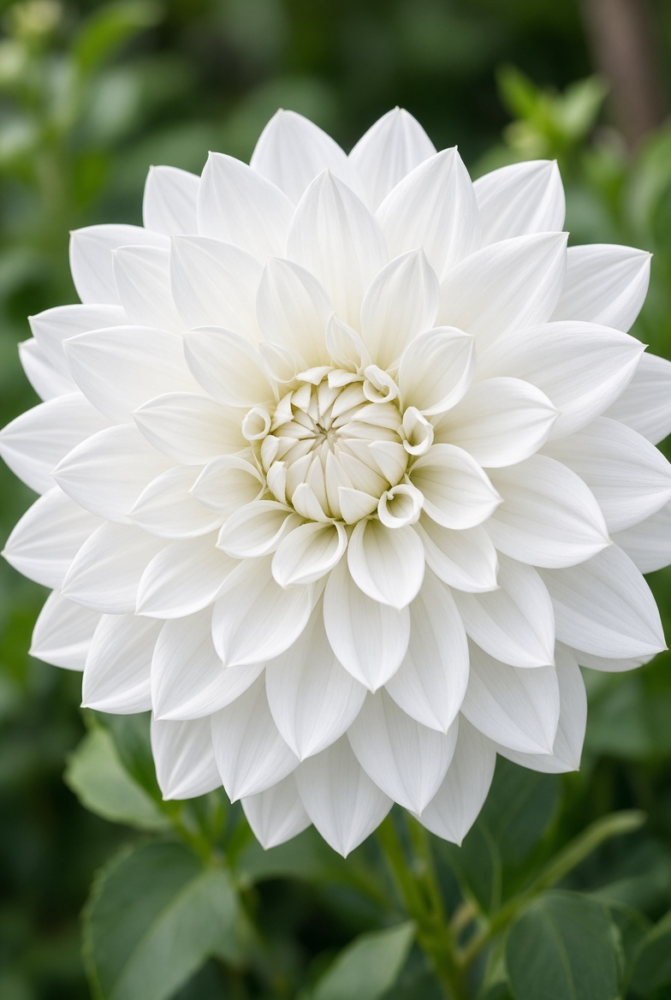
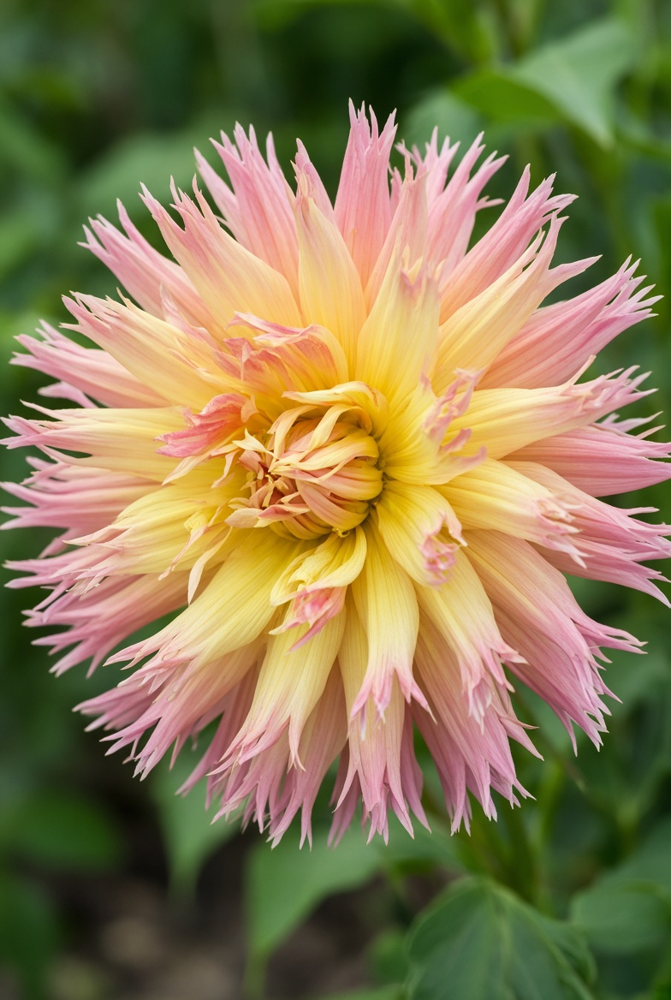
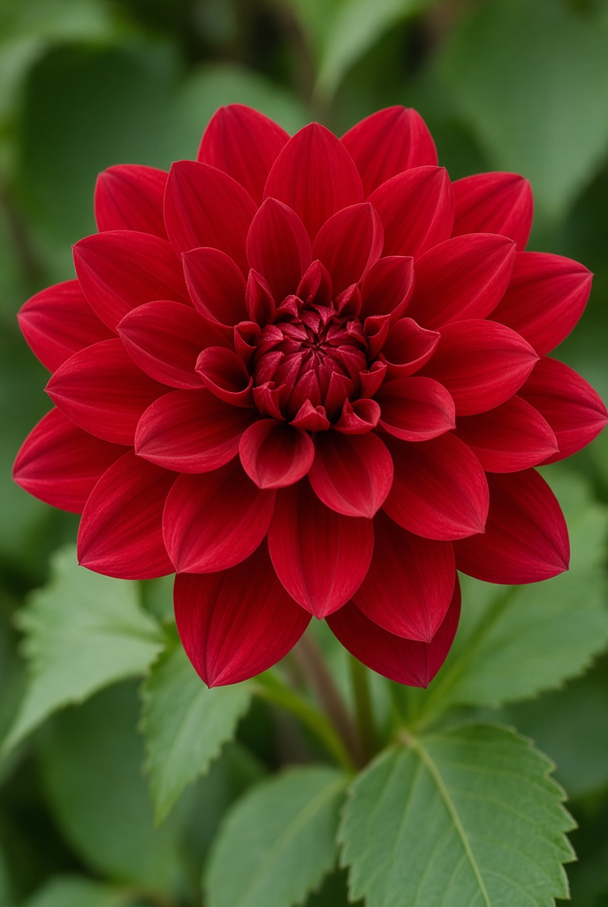

Våra Dahlior
På denna gården odlas över 30 sorters dahlior
Så här kommer några av mina personliga favoriter
Dekorativ jättedahlia

Här har vi en vit jättedahlia, kan lätt bli stor som en tallrik, ca 30cm i diameter.
Det enda "komplicerade" med denna blomman är att du kan behöva stadga upp den för blomman kan bli tung för stjälken.
Fransad Dahlia

Här är en frans dahlia, det känner man igen på dom spretiga bladen.
Otroligt bra första dahlia, väldigt enkel och väldigt fin!
Näckrosdahlia

En näckrosdahlia har stora och täta blad och öppnar upp sig precis som en näckros
Också en väldigt bra nybörjar dahlia